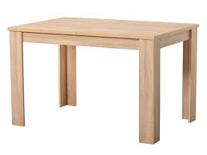
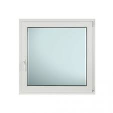

Kućna stolarija igra ključnu ulogu u stvaranju funkcionalnog i estetski privlačnog prostora. Ova vrsta stolarije obuhvata sve drvene elemente unutar doma, uključujući vrata, prozore, kuhinjske elemente, police i namještaj. Kvalitetna stolarija ne samo da doprinosi lepoti prostora, već i poboljšava njegovu energetsku efikasnost i udobnost. Izbor materijala, kao što su masivno drvo ili MDF, može značajno uticati na trajnost i izgled završnog proizvoda.
Osim estetskog aspekta, kućna stolarija je i pitanje praktičnosti. Prilagođeni komadi, kao što su ugradni ormari ili prilagođene kuhinje, omogućavaju bolje iskorišćavanje prostora, posebno u manjim stanovima. Stolarija može biti dizajnirana tako da odražava lični stil vlasnika, bilo da se radi o modernom, klasičnom ili rustičnom dizajnu. Ulaganje u kvalitetnu stolariju može povećati vrednost nekretnine i poboljšati svakodnevnu upotrebu prostora.
Pored funkcionalnosti i estetike, održavanje stolarije je još jedan važan aspekt. Redovno održavanje, kao što je premazivanje drvenih površina zaštitnim sredstvima ili popravka oštećenih delova, može značajno produžiti životni vek stolarije. Uz to, korišćenje ekološki prihvatljivih materijala i završnih obrade može doprineti očuvanju životne sredine. U konačnici, kućna stolarija predstavlja spoj umetnosti i zanatstva, koji svaki dom čini jedinstvenim i prijatnim mestom za život.